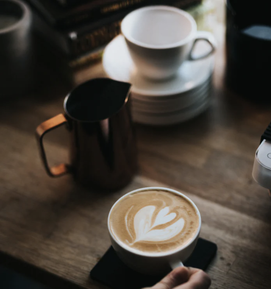

Coffeeroasters began its journey of exotic discovery in 1999,
highlighting stories of coffee from around the world. We have
since been dedicated to bring the perfect cup - from bean to brew - in every shipment.

Uncompromising quality
Although we work with growers who pay close attention to all stages of harvest and processing, we employ, on our end, a rigorous quality control program to avoid over-roasting or baking the coffee dry. Every bag of coffee is tagged with a roast date and batch number. Our goal is to roast consistent, user-friendly coffee, so that brewing is easy and enjoyable.

Uncompromising quality
Although we work with growers who pay close attention to all stages of harvest and processing, we employ, on our end, a rigorous quality control program to avoid over-roasting or baking the coffee dry. Every bag of coffee is tagged with a roast date and batch number. Our goal is to roast consistent, user-friendly coffee, so that brewing is easy and enjoyable.
Our headquarters

United Kingdom
68 Asfordby Rd
Alcaston
SY6 1YA
+44 1241 918425
Alcaston
SY6 1YA
+44 1241 918425

Canada
1528 Eglinton Avenue
Toronto
Ontario M4P 1A6
+1 416 485 2997
Toronto
Ontario M4P 1A6
+1 416 485 2997

Austraila
36 Swanston Street
Kewell
Victoria
+61 4 9928 3629
Kewell
Victoria
+61 4 9928 3629